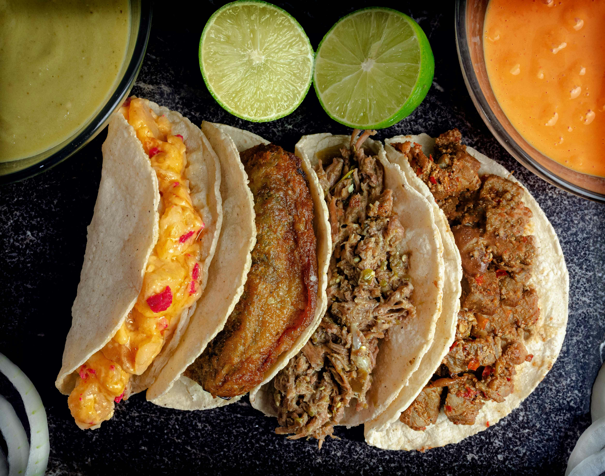
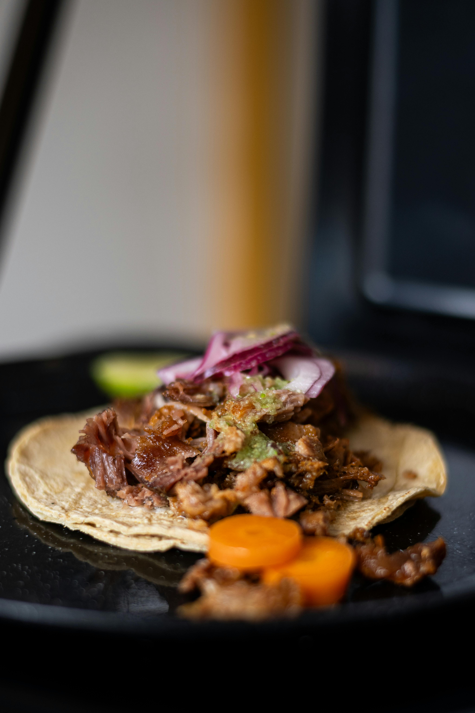
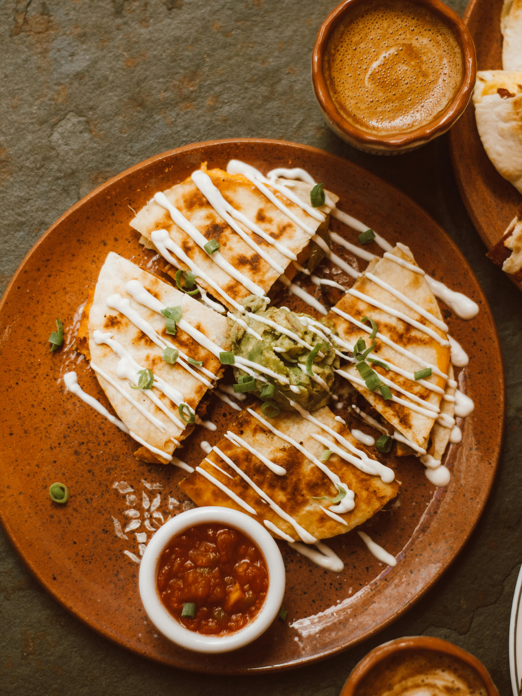
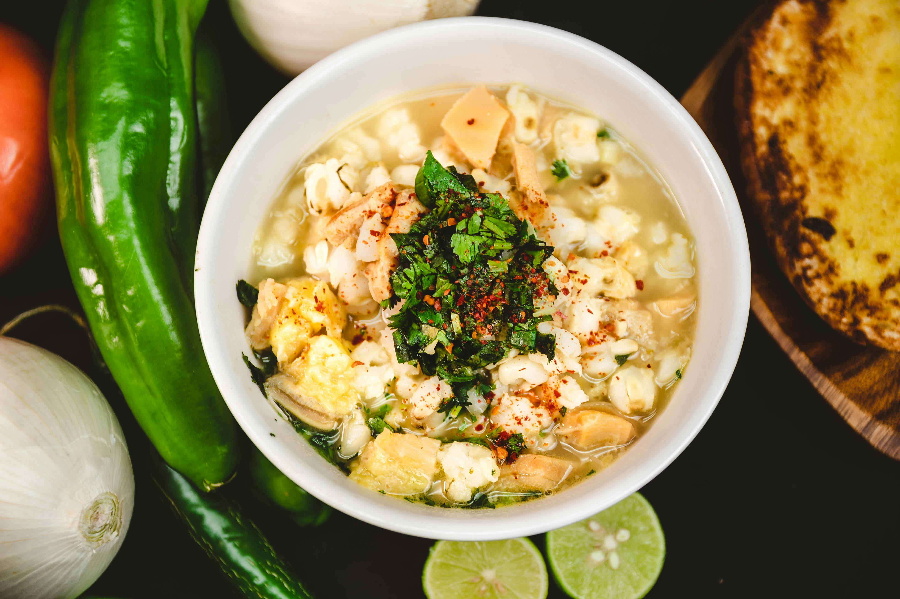
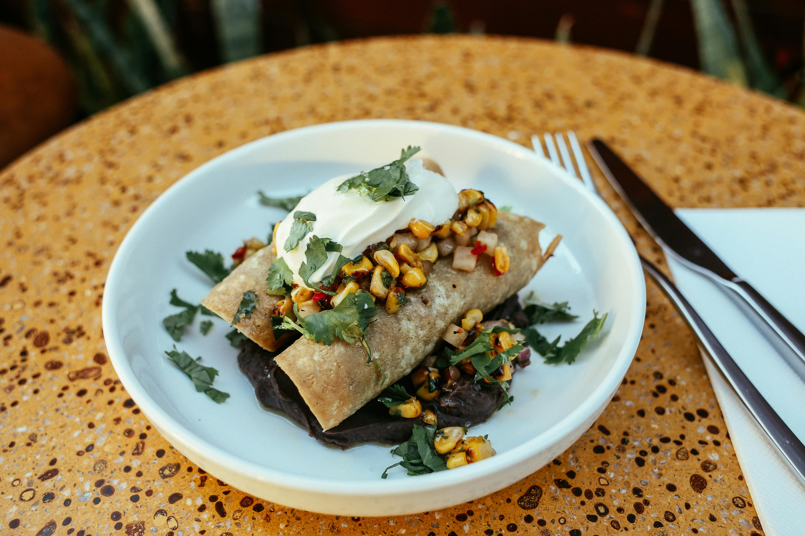

Taco al Pastor
Deliciosa combinación de carne al pastor con piña y cebolla.
$2.50

Taco de Carnitas
Carne de cerdo cocida lentamente y servida en tortillas.
$3.00

Quesadillas
Queso y carne cocida con tortillas.
$4.00

Chilaquiles
Crujientes tortillas bañadas en salsa verde o roja, acompañadas de queso fresco, crema y cebolla.
$3.50
Chilaquiles
Crujientes tortillas bañadas en salsa verde o roja, acompañadas de queso fresco, crema y cebolla.
$3.50

Pozole
Sopa tradicional de maíz y carne, servida con lechuga, rábanos, cebolla y limón.
$6.00

Enchiladas
Tortillas rellenas de pollo y bañadas en salsa roja, verde o mole, con queso y crema.
$5.00

Tamales
Masa de maíz rellena de carne, chiles o vegetales, envuelta en hojas de maíz y cocida al vapor.
$3.00